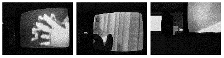
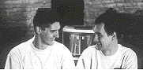

During a stormy summer in 1992, Herbert Van de Sompel and Guy c. Jules Van Belle stash their gear together in a backroom, and pick up a slogan from a blurry clip in the late news. Within a couple of weeks they finish The Newspaper Sessions, a comprehensive series of pieces for computers and sound generators.
In the performances they got assisted by two American vocalists on top of some trashy B&W television sets. Themes range from euthanasia, social-technological problems, to religion and transsexuality, and are all unconditionally mediatised.

For the subsequent performances, a gradual transformation and integration of all elements occurs: more computers are added to the network, each with a distinctive creative task. Images are digitally generated and modified. Computer voices simulate the human dialogues.
Finally, also the music proves to be different: the original thumbnail-themes played by 'instruments that can have a name' are transformed into hefty sequences constituted by detached sounds. This develops further into a new collection, The Neckhair Chronicles. The fragmented texts suggest characters and players who only exist in the musical lines with an indefinite story tracing the sneaky zone between new theories and charlatanism.

Flanders has always been proud of the support to a its traditional music culture, denying progressive tendencies. This is conform to an international consciousness, of course.
Douglas Kahn: "The lateness of Cage's modernism is in direct relation to the conservatism of Western art music".
On the other side, Young Farmers have never been too troublesome: aside from a classical and avant-garde background, they frequently hint at the more popular genres: ethnical music, underground, hiphop and experimental pop.
By the end of 1994, they complete most of the studiowork at STEIM (Amsterdam), and go into post-production at their own studio .ping. The music is ready for release.
A whimsical remark: "Quick, before the medium changes ...", and Young Farmers are already editing their archive on Internet for inclusion on the CD.
(@RIVERLAND)
A huge digital poster uses the computer monitor as a viewmaster. Again, such a move is always bothersome, and the question arises: will Young Farmers Claim Future produce 'last of the mixed-mode CD's' or 'first of the CD+'?"
Kick Dicky's ass and find out for yourself.
PS By SUB ROSA, October 2 1995:
"...consider too that of course it will be not so easy to sell it
because it is not immediate pop music,
so don't expect to be like Mick Jagger in the next 6 months..."